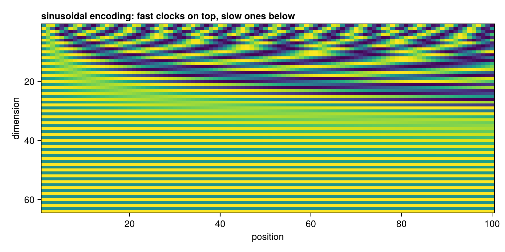
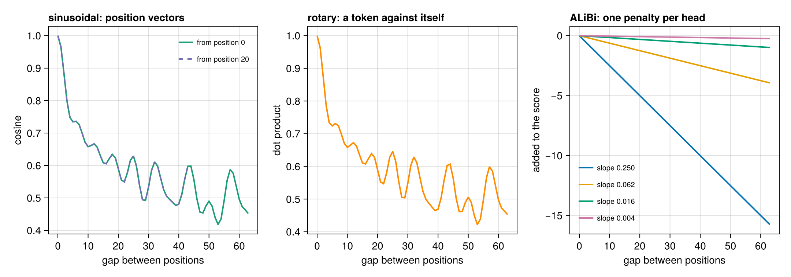

Positional encoding
A word vector says what a token is. Nothing so far says where it is, and attention on its own cannot tell: scores are dot products between vectors, so permuting the input permutes the output and changes nothing else. Without help, "the cat chases the mouse" and "the mouse chases the cat" are the same bag of vectors.
Position has to be supplied deliberately. There are four schemes in common use, and they differ in what they modify: the token vector, a lookup table, the query and key inside attention, or the attention scores themselves.
using CustomTokenizer, CairoMakie, LinearAlgebra, RandomSinusoidal: fixed, added once
sinusoidal_encoding builds the encoding from the original transformer paper. Rows come in pairs, and each pair is a clock:
\[PE[2i, p] = \sin\!\left(\frac{p}{base^{2i/d}}\right), \qquad PE[2i+1, p] = \cos\!\left(\frac{p}{base^{2i/d}}\right)\]
The first pair ticks every few positions, the last pair turns once across the whole context. A column is all the clocks read at once, which pins down the position the way hour and minute hands pin down a time.
P = sinusoidal_encoding(8, 6)
round.(P; digits = 3)8×6 Matrix{Float64}:
0.0 0.841 0.909 0.141 -0.757 -0.959
1.0 0.54 -0.416 -0.99 -0.654 0.284
0.0 0.1 0.199 0.296 0.389 0.479
1.0 0.995 0.98 0.955 0.921 0.878
0.0 0.01 0.02 0.03 0.04 0.05
1.0 1.0 1.0 1.0 0.999 0.999
0.0 0.001 0.002 0.003 0.004 0.005
1.0 1.0 1.0 1.0 1.0 1.0Position 0 is sin 0, cos 0 repeated, and the rows get slower as you go down. Drawn for a longer context, the structure is obvious:
plot_positional_encoding(sinusoidal_encoding(64, 100))
The useful property is not the values but a relationship between them: PE[:, p+k] is PE[:, p] turned by a fixed angle, the same angle whatever p is. Attention can therefore pick up on the gap rather than the absolute place:
Plong = sinusoidal_encoding(8, 32)
k, θ = 3, 3 / 10_000.0^(2 / 8)
[(p, round.((Plong[3, p+1] * cos(θ) + Plong[4, p+1] * sin(θ),
Plong[4, p+1] * cos(θ) - Plong[3, p+1] * sin(θ)); digits = 4),
round.((Plong[3, p+k+1], Plong[4, p+k+1]); digits = 4)) for p in (0, 5, 17)]3-element Vector{Tuple{Int64, Tuple{Float64, Float64}, Tuple{Float64, Float64}}}:
(0, (0.2955, 0.9553), (0.2955, 0.9553))
(5, (0.7174, 0.6967), (0.7174, 0.6967))
(17, (0.9093, -0.4161), (0.9093, -0.4161))Rotate, and you land on the real thing, at every p.
A learned table
learned_positions is the other classic: one column per position, trained like any other parameter, which is what GPT-2 and BERT do.
L = learned_positions(8, 512)
size(L)(8, 512)Simple, and it works — with one hard edge. Column 512 is the last one that exists, so the model cannot be run past the length it was trained for. The sinusoidal and rotary schemes have a value for every position, trained or not.
RoPE: rotate the query and the key
rope is what Llama, Gemma and Qwen use. It adds nothing. It treats consecutive pairs of coordinates as points in a plane and rotates them by an angle proportional to the position.
Two consequences, both worth checking rather than believing:
rng = Xoshiro(1)
q, k = randn(rng, 16), randn(rng, 16)
(no_rotation_at_zero = rope(q, 0) ≈ q,
length_preserved = norm(rope(q, 137)) ≈ norm(q))(no_rotation_at_zero = true, length_preserved = true)and the one that matters:
[(m, n, round(dot(rope(q, m), rope(k, n)); digits = 8),
round(dot(rope(q, m - n), k); digits = 8)) for (m, n) in ((7, 3), (100, 96), (2, 9))]3-element Vector{Tuple{Int64, Int64, Float64, Float64}}:
(7, 3, 0.79824104, 0.79824104)
(100, 96, 0.79824104, 0.79824104)
(2, 9, -2.33703718, -2.33703718)The dot product of a query at position m with a key at position n depends on m - n alone — absolute position cancels exactly, to machine precision. That is why RoPE is applied inside attention, to the queries and keys, at every layer, rather than to the embeddings once.
ALiBi: bias the scores
alibi_bias modifies neither the vectors nor the queries. It subtracts a penalty from the attention score in proportion to the distance, with a different slope per head, so some heads look locally and others globally.
alibi_slopes(4)4-element Vector{Float64}:
0.25
0.0625
0.015625
0.00390625B = alibi_bias(4, 5) # 5 × 5 × 4: query, key, head
round.(B[:, :, 1]; digits = 2)5×5 Matrix{Float64}:
-0.0 -Inf -Inf -Inf -Inf
-0.25 -0.0 -Inf -Inf -Inf
-0.5 -0.25 -0.0 -Inf -Inf
-0.75 -0.5 -0.25 -0.0 -Inf
-1.0 -0.75 -0.5 -0.25 -0.0Zero on the diagonal, more negative as you move away, -Inf above it because a token cannot attend to its future. Nothing here was fitted to a particular length, which is what gives ALiBi its reputation for extrapolating past the training context.
How they compare
plot_position_decay(; dim = 64, len = 64)
The left panel is the giveaway: the curve measured from position 0 and the curve measured from position 20 lie exactly on top of each other. What these encodings supply is distance, not place. The middle panel shows the same shape arising from the rotary dot product, since it is built from the same clocks. On the right, ALiBi is a straight line by construction — one per head.
S = position_similarity(sinusoidal_encoding(64, 64))
d = rope_similarity(64, 64)
[(gap, round(S[1, gap + 1]; digits = 3), round(d[gap + 1]; digits = 3))
for gap in (0, 1, 2, 4, 8, 16, 32, 63)]8-element Vector{Tuple{Int64, Float64, Float64}}:
(0, 1.0, 1.0)
(1, 0.966, 0.963)
(2, 0.884, 0.876)
(4, 0.748, 0.733)
(8, 0.7, 0.699)
(16, 0.605, 0.607)
(32, 0.611, 0.629)
(63, 0.452, 0.453)Choosing between them
| scheme | what it touches | applied | extrapolates | in the wild |
|---|---|---|---|---|
| sinusoidal | the token vector | once, before layer 1 | in principle | original transformer |
| learned table | the token vector | once, before layer 1 | no — hard limit | GPT-2, BERT |
| RoPE | queries and keys | every layer | with scaling tricks | Llama, Gemma, Qwen |
| ALiBi | the attention scores | every layer | yes, by design | BLOOM, MPT |
The trend went from "add something to the embedding" to "change how attention measures distance", because the second keeps the property you actually want — that only the gap between two tokens matters — exactly rather than approximately.
A note on scope
This is a transformer component, not part of word2vec. It sits here because it is the next piece after tokenization and embeddings: tokens become ids, ids become vectors, and positional encoding is what tells the model the order those vectors arrived in.